Galeria

 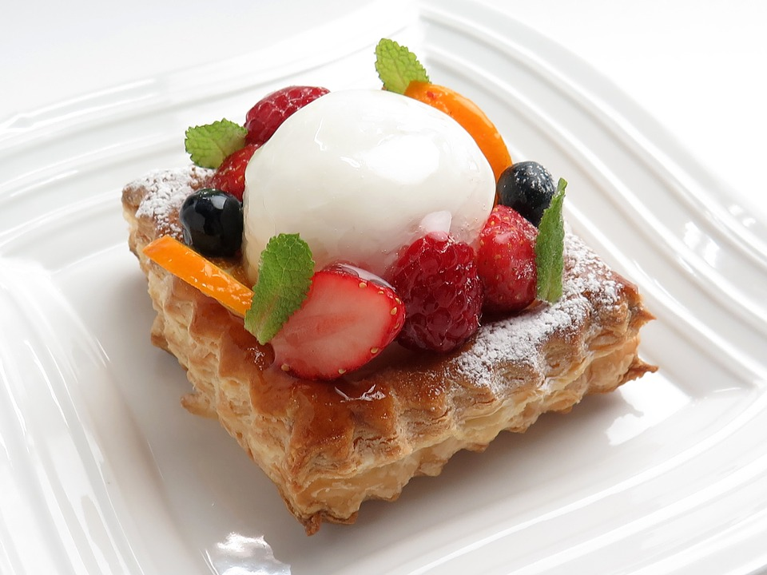
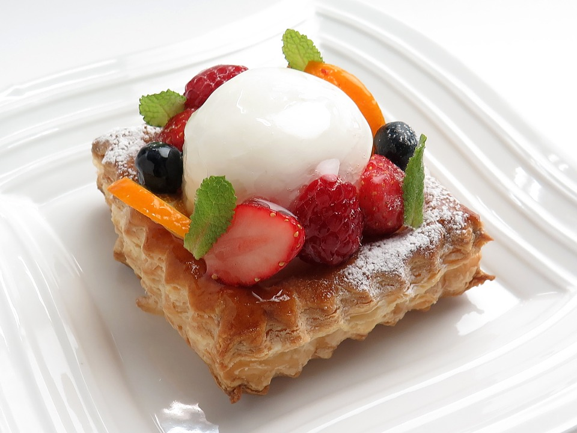
 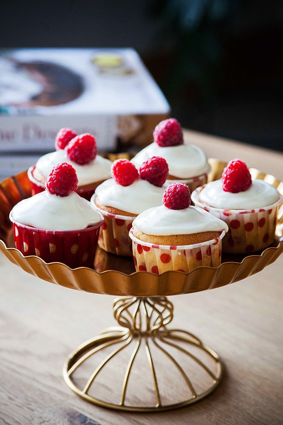
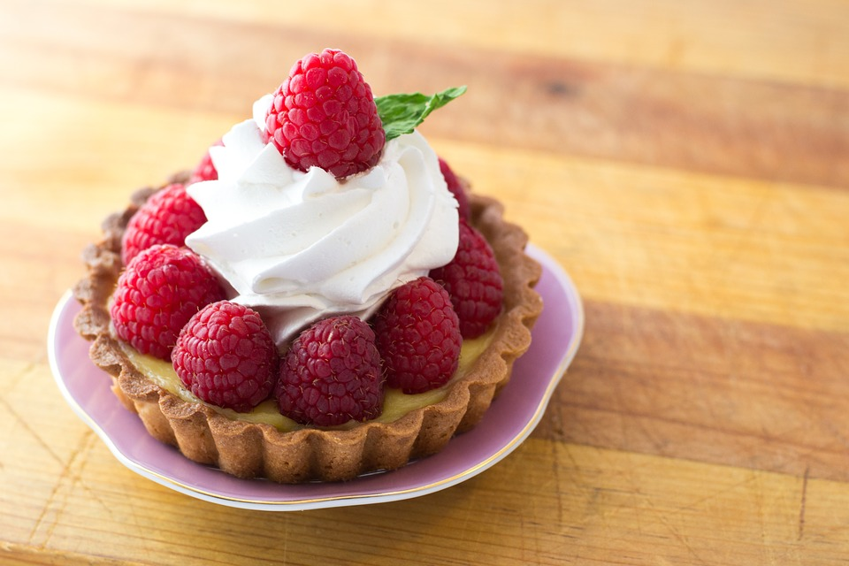
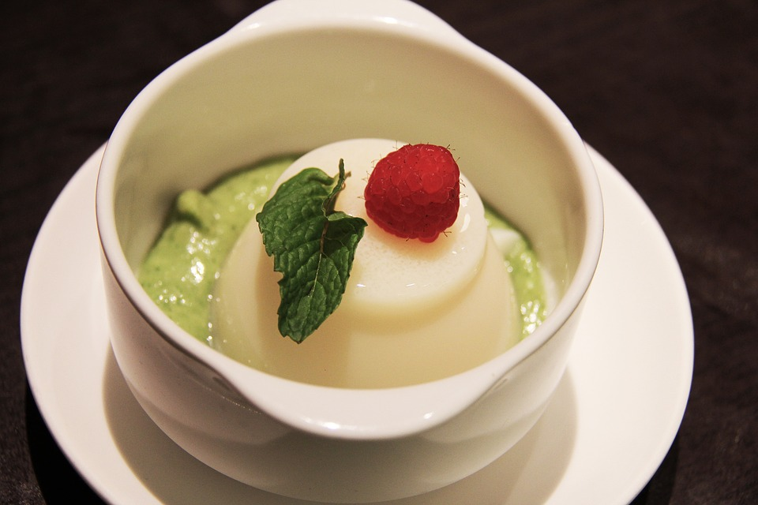
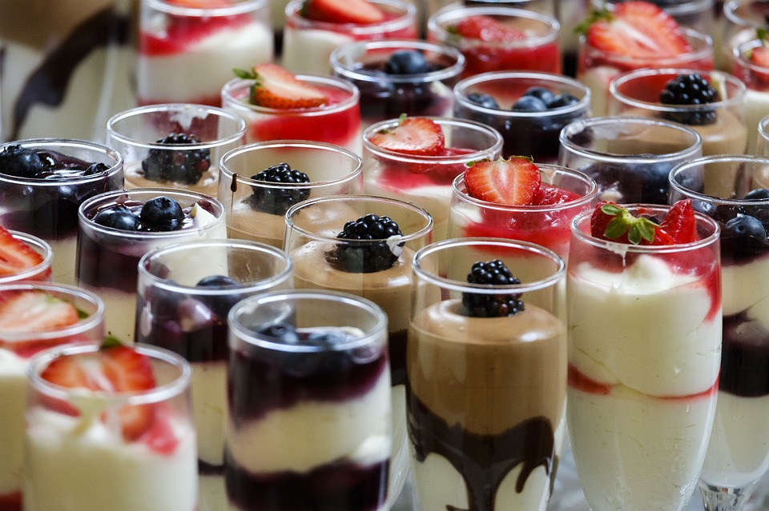
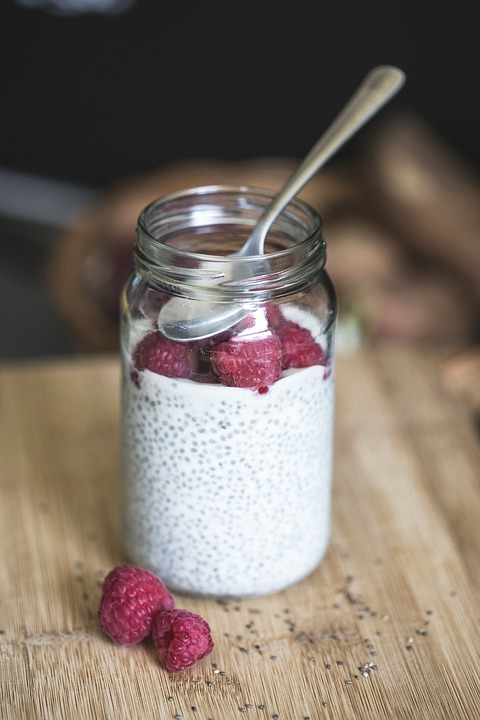
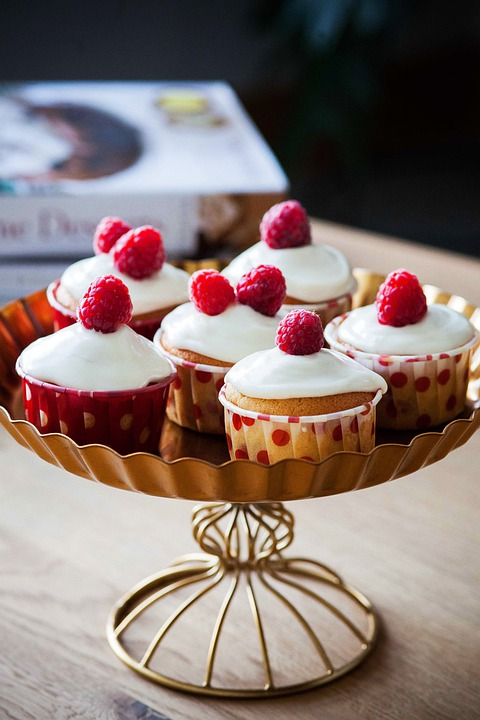
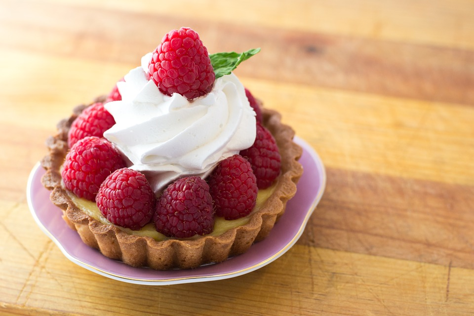
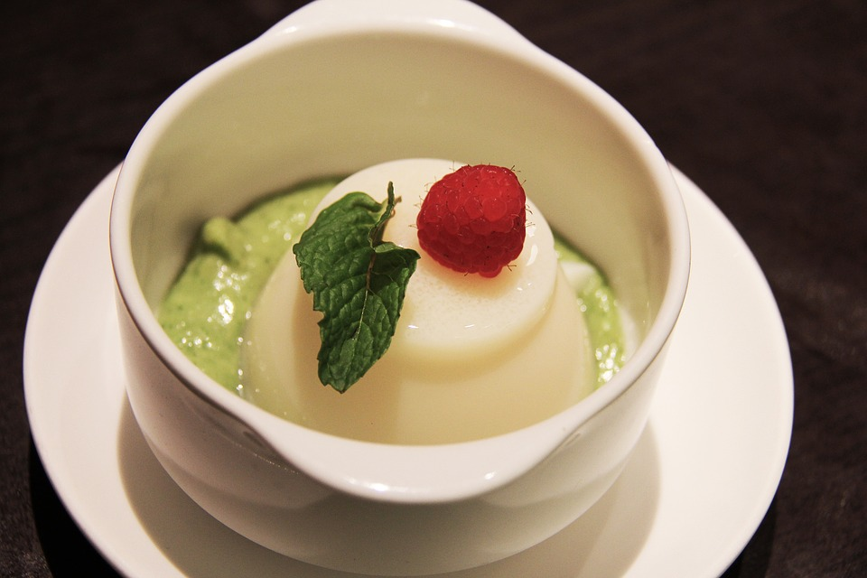
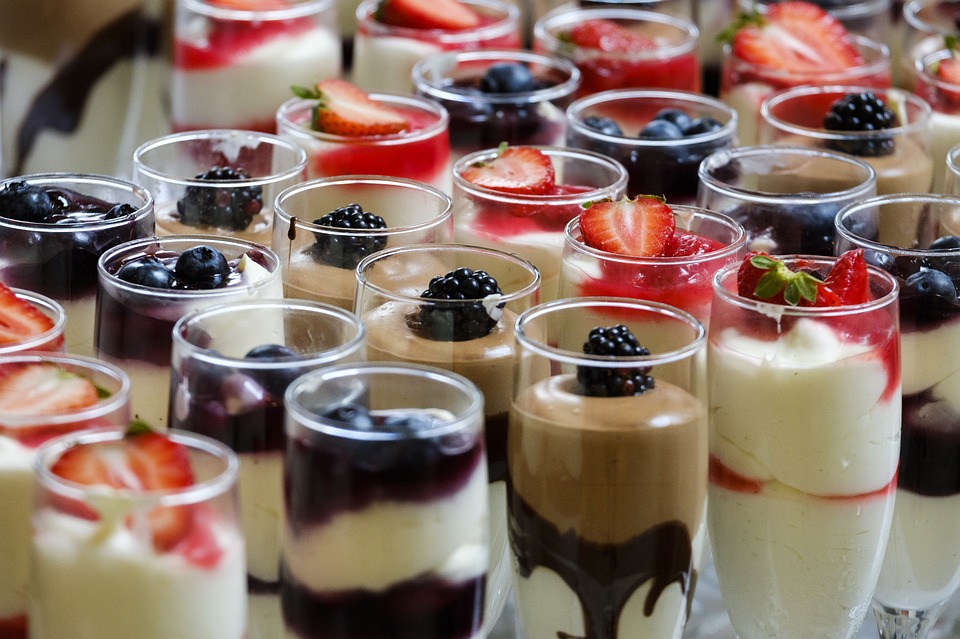
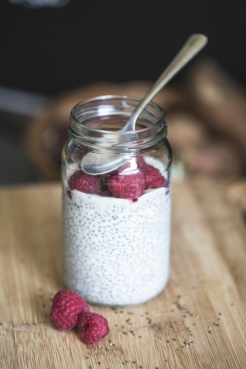
Bistro Raspberry powstało w 2020 roku na znanej ul. Malinowej w Krakowie. Doszliśmy do wniosku, że dania przez nas serwowane najbardziej skomponują się z nazwą tej ulicy. Od początku naszej działalności skupiamy sie na połączeniu słodkiego i orzeżwiajacego smaku malin z klasykami polskiej i europejskiej kuchni. Pokażemy Ci słodką i kuszącą stronę maliny a także tąż bardziej wykwintną. U nas skosztujesz przepysznej kawy z malinowym syropem oraz obłędnie lekkiego niczym chmurka wiedeńskiego, sernika malinowego. Jeżeli raz nas odwiedzisz zapragniesz ciągle powracać w nasze niebiańskie progi.
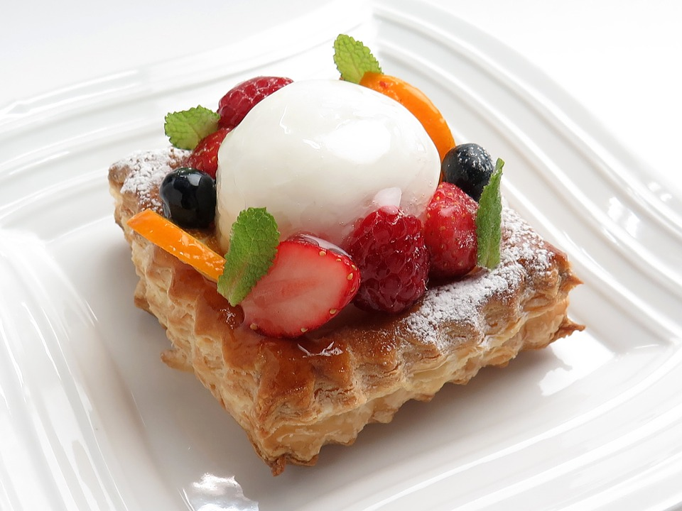
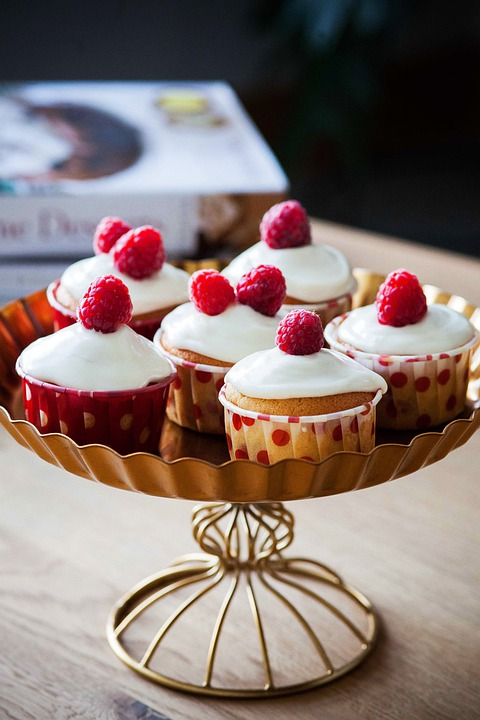
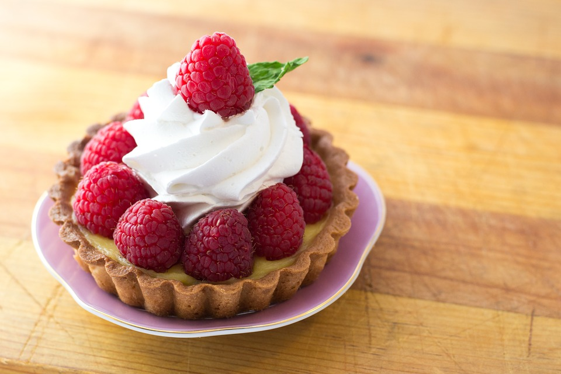
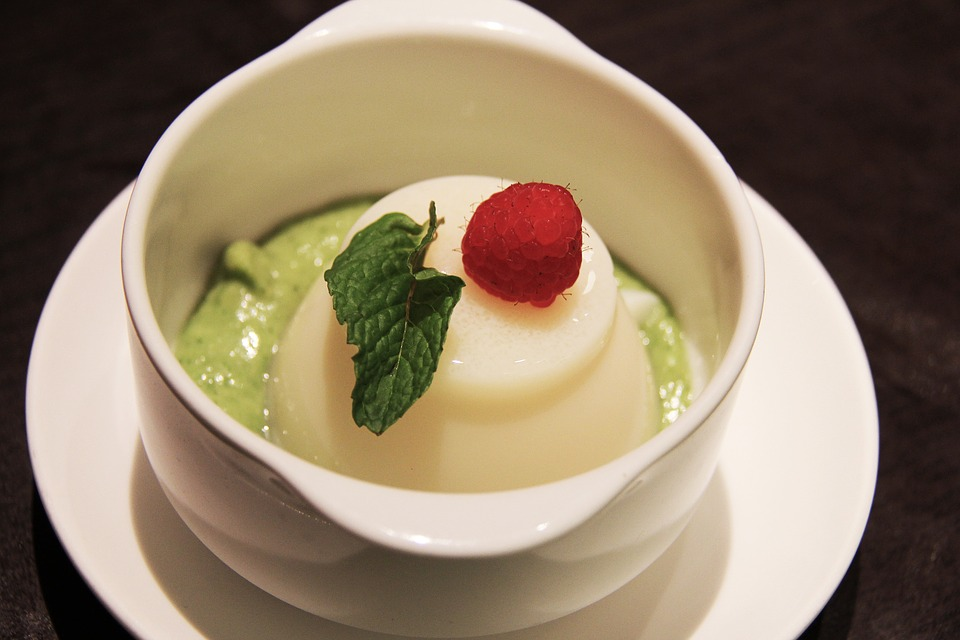
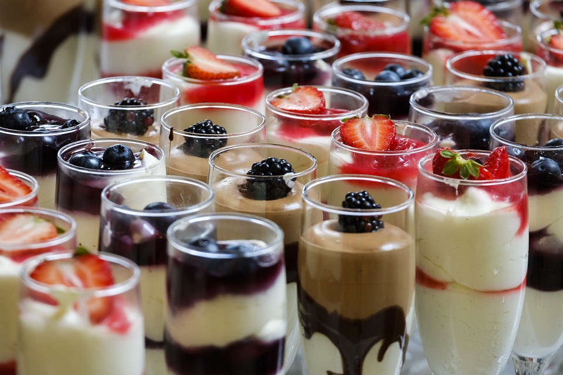
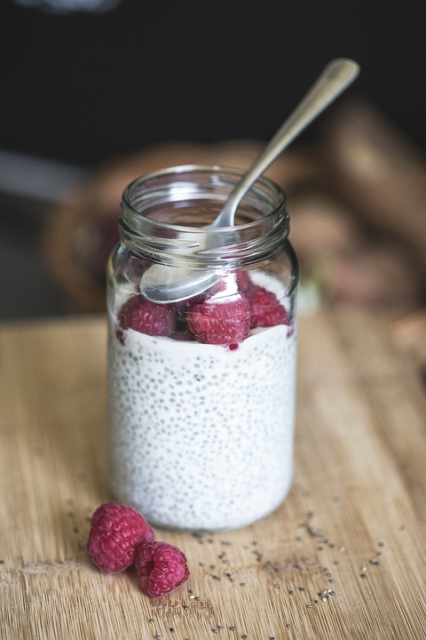